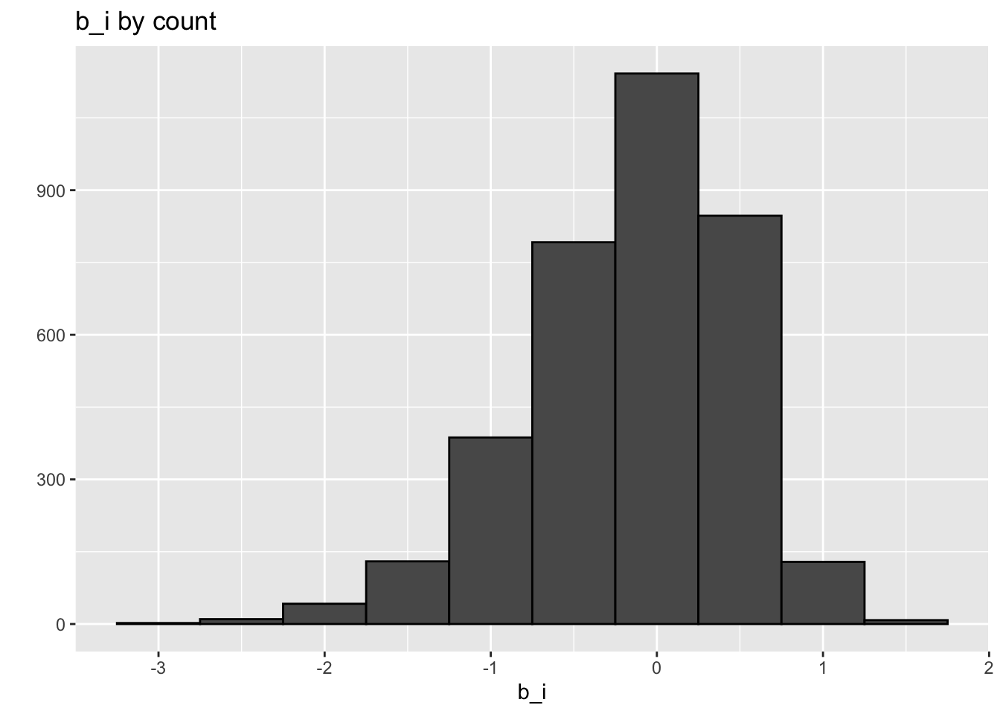

In this problem, you are tasked with two prediction tasks using machine learning models: 1) predict movie ratings from the MovieLens dataset, and 2) classify the digits from the MNIST handwritten digits. Your final submission in your GitHub repository should consist of four components: your Quarto file, your knitted HTML file, an RDS file of your MovieLens predictions, and an RDS file of your digits predictions. Please make sure you show ALL of your code, but do not print any large output (such as entire matrices/dataframes).
Part 1: MovieLens Data
1. Load in the training dataset from RDS directory, which can be accessed as mvl_students$train.
#done#11/4#load the dataset from the RDS directoryfilename <-"RDS/mv_st_new.RDS"
2. Preprocess the data in any way you find appropriate. This could include removing noninformative features, standardization, dimension reduction, transformation, and more.
#read file into environmentmvl_students<-read_rds(filename)#view overall datasetstr(mvl_students)
#EDA#new code#12/6/23set.seed(755)#changed thismovielens <-mvl_students$traintest_index <-createDataPartition(y = movielens$rating, times =1,p =0.2, list =FALSE)train_set <- movielens[-test_index,]test_set <- movielens[test_index,]test_set <- test_set %>%semi_join(train_set, by ="movieId") %>%semi_join(train_set, by ="userId")#semi_join only the rows from the first data frame that have matching values in the specified columns of the second data frame are retained.#create a function that will calculate the RSMERMSE <-function(true_ratings, predicted_ratings){sqrt(mean((true_ratings - predicted_ratings)^2))}
#compute the mean of training set rating columnmu_hat <-mean(train_set$rating)mu_hat
[1] 3.578369
#this will serve as baseline RSME to comparenaive_rmse <-RMSE(test_set$rating, mu_hat)naive_rmse
[1] 1.053873
#make a prediction of mean RSME to naive RSMEpredictions <-rep(2.5, nrow(test_set))RMSE(test_set$rating, predictions)
[1] 1.509291
#create a dataframe to collect all the models RMSErmse_results <-data_frame(method ="Just the average", RMSE = naive_rmse)
# fit <- lm(rating ~ as.factor(userId), data = movielens)mu <-mean(train_set$rating) movie_avgs <- train_set %>%group_by(movieId) %>%summarize(b_i =mean(rating - mu))
#plot b_i valuesmovie_avgs %>%qplot(b_i, geom ="histogram", bins =10, data = ., color =I("black")) +labs(title ='b_i by count')

#make another predictions and add it to the tablepredicted_ratings <- mu + test_set %>%left_join(movie_avgs, by='movieId') %>% .$b_imodel_1_rmse <-RMSE(predicted_ratings, test_set$rating)rmse_results <-bind_rows(rmse_results,data_frame(method="Movie Effect Model",RMSE = model_1_rmse ))rmse_results %>% knitr::kable()
method
RMSE
Just the average
1.0538735
Movie Effect Model
0.9814651
#more EDAtrain_set %>%group_by(userId) %>%summarize(b_u =mean(rating)) %>%filter(n()>=100) %>%ggplot(aes(b_u)) +geom_histogram(bins =30, color ="black") +labs(title ='b_i by count')
#create another model and add it to the tablepredicted_ratings <- test_set %>%left_join(movie_avgs, by='movieId') %>%left_join(user_avgs, by='userId') %>%mutate(pred = mu + b_i + b_u) %>% .$predmodel_2_rmse <-RMSE(predicted_ratings, test_set$rating)rmse_results <-bind_rows(rmse_results,data_frame(method="Movie + User Effects Model", RMSE = model_2_rmse ))rmse_results %>% knitr::kable()
#more EDA. Let's explore regulization with this datasetdata_frame(original = movie_avgs$b_i, regularlized = movie_reg_avgs$b_i, n = movie_reg_avgs$n_i) %>%ggplot(aes(original, regularlized, size=sqrt(n))) +geom_point(shape=1, alpha=0.5)
#more EDA with respect to regularizationtrain_set %>% dplyr::count(movieId) %>%left_join(movie_reg_avgs) %>%left_join(movie_titles, by="movieId") %>%arrange(desc(b_i)) %>% dplyr::select(title, b_i, n) %>%slice(1:10) %>% knitr::kable()
title
b_i
n
Godfather, The
0.9352935
124
Shawshank Redemption, The
0.8939154
205
Maltese Falcon, The
0.8796100
39
Band of Brothers
0.8550579
16
Best Years of Our Lives, The
0.8520955
8
Chinatown
0.8222365
55
Wings of Desire (Himmel über Berlin, Der)
0.8178140
14
Usual Suspects, The
0.8053723
124
Philadelphia Story, The
0.7960584
23
Lifeboat
0.7951419
7
#more EDA with respect to regulaizationtrain_set %>% dplyr::count(movieId) %>%left_join(movie_reg_avgs) %>%left_join(movie_titles, by="movieId") %>%arrange(b_i) %>% dplyr::select(title, b_i, n) %>%slice(1:10) %>% knitr::kable()
Joining with `by = join_by(movieId)`
title
b_i
n
Battlefield Earth
-2.001175
13
Spy Kids 2: The Island of Lost Dreams
-1.539184
3
Super Mario Bros.
-1.525861
11
Wild Wild West
-1.520532
27
End of Days
-1.501175
13
Joe’s Apartment
-1.473354
4
Blade: Trinity
-1.466086
8
Bio-Dome
-1.429362
12
Anaconda
-1.424316
18
Police Academy 3: Back in Training
-1.418718
11
#more EDA with respect to regularizationpredicted_ratings <- test_set %>%#I think this is the modelleft_join(movie_reg_avgs, by='movieId') %>%mutate(pred = mu + b_i) %>% .$predmodel_3_rmse <-RMSE(predicted_ratings, test_set$rating) #regulaization is not low compared to Movie + User Effects Modelrmse_results <-bind_rows(rmse_results,data_frame(method="Regularized Movie Effect Model", RMSE = model_3_rmse ))rmse_results %>% knitr::kable()
method
RMSE
Just the average
1.0538735
Movie Effect Model
0.9814651
Movie + User Effects Model
0.8672888
Regularized Movie Effect Model
0.9735344
#more EDA but with regulzation and user effect modellambdas <-seq(0, 10, 0.25)mu <-mean(train_set$rating)just_the_sum <- train_set %>%group_by(movieId) %>%summarize(s =sum(rating - mu), n_i =n())
#more EDA but with regulzation and user effect model continuedrmses <-sapply(lambdas, function(l){ predicted_ratings <- test_set %>%left_join(just_the_sum, by='movieId') %>%mutate(b_i = s/(n_i+l)) %>%mutate(pred = mu + b_i) %>% .$predreturn(RMSE(predicted_ratings, test_set$rating))})qplot(lambdas, rmses) +labs(title ='Lambdas agaisnt RMSES')
#more EDA but with regulzation and user effect model#which is lowest lambdalambdas[which.min(rmses)]
[1] 2.5
#create a function to look over lambdaslambdas <-seq(0, 10, 0.25)rmses <-sapply(lambdas, function(l){ mu <-mean(train_set$rating) b_i <- train_set %>%group_by(movieId) %>%summarize(b_i =sum(rating - mu)/(n()+l)) b_u <- train_set %>%left_join(b_i, by="movieId") %>%group_by(userId) %>%summarize(b_u =sum(rating - b_i - mu)/(n()+l)) predicted_ratings <- test_set %>%left_join(b_i, by ="movieId") %>%left_join(b_u, by ="userId") %>%mutate(pred = mu + b_i + b_u) %>% .$predreturn(RMSE(predicted_ratings, test_set$rating))})
#plot the lambdas vs rmsesqplot(lambdas, rmses) +labs(title ='Lambdas agaisnt RMSES')
#which lambdas is the loswestlambda <- lambdas[which.min(rmses)]lambda
[1] 3
rmse_results <-bind_rows(rmse_results,data_frame(method="Regularized Movie + User Effect Model", RMSE =min(rmses)))rmse_results %>% knitr::kable()
method
RMSE
Just the average
1.0538735
Movie Effect Model
0.9814651
Movie + User Effects Model
0.8672888
Regularized Movie Effect Model
0.9735344
Regularized Movie + User Effect Model
0.8831640
3. Train a machine learning model. Choose at least one model validation method (data splitting, smoothing techniques, nearest neighbors, or n-fold cross validation) that you learned in class to determine how well your model is doing in each case.
#12/6/23real_test <- mvl_students$test #18265 obsreal_train <- mvl_students$trainreal_test2 <- real_test %>%semi_join(real_train, by =c('movieId')) %>%#works heresemi_join(real_train, by =c('userId')) #works heremu_hat_n <-mean(real_train$rating)mu_hat_n
[1] 3.578543
#Just the Average Modelmu_hat_n2 <-mean(real_train$rating)movie_avgs <- real_train %>%group_by(movieId) %>%summarize(b_i =mean(rating - mu_hat_n2))predicted_ratings1 <- mu_hat_n2 + real_test2 %>%left_join(movie_avgs, by='movieId') %>% .$b_i#dim is 18265#Movie Effect Model#works and output has real numbers
user_avgs <- real_train %>%left_join(movie_avgs, by='movieId') %>%group_by(userId) %>%summarize(b_u =mean(rating - mu_hat_n2 - b_i))predicted_ratings2 <- real_test2 %>%left_join(movie_avgs, by='movieId') %>%left_join(user_avgs, by='userId') %>%mutate(pred = mu_hat_n2 + b_i + b_u) %>% .$pred#dim is 18265#Movie + User Effects Model#works and output real numbers
4. Apply your final model to produce movie rating predictions on the test data, which can be accessed as mvl_students$test. Save your predictions in a vector of numeric values, named rating_predictions, as an RDS file called rating_predictions.RDS. Important: the order of your predictions must match the corresponding order of the test data.
#check if predicted_ratings2 is a numeric vectoris.numeric(predicted_ratings2) #TRUE
[1] TRUE
sum(is.na(predicted_ratings2)) #0 NAs
[1] 0
length(predicted_ratings2) #same as test, #18265
[1] 18265
#save this thaaaaannnnnnnggggsaveRDS(predicted_ratings2, file ='rating_predictions_new.RDS')#save predictions to a RDS file in RDS foldersaveRDS(predicted_ratings2, file ="RDS/rating_predictions_new.RDS")#DONE
Part 2: MNIST Digits
1. Load in the training dataset from the RDS directory, which can be accessed as digits_students$train. Note: if the training dataset is too large to work with on your computer, you may subset the data to a smaller size.
#load libraries for the datasetlibrary(tidyverse)library(caret)library(Rborist)library(randomForest)library(MASS)library(rpart)library(matrixStats)
#12/4/23#done#load the dataset from the RDS directoryfilename2 <-"RDS/digits_students.rds"#read file into environmentdigits_students<-read_rds(filename2)
2. Preprocess the data in any way you find appropriate. This could include removing noninformative features, standardization, dimension reduction, transformation, and more.
#make results reproducibleset.seed(1990)#explore the data with sample 10K rows from the training set, 1K rows from the test set#we are basically creating objects that split the images and labels from the train dataindex <-sample(nrow(digits_students$train$images), 10000)x <- digits_students$train$images[index, ] #becomes a matrixy <-factor(digits_students$train$labels[index]) #becomes a factor. There are VALUES HERE!#splitting the images and labels from test dataindex <-sample(nrow(digits_students$test$images), 1000)x_test <- digits_students$test$images[index,]y_test <-factor(digits_students$test$labels[index]) #remember this does NOT HAVE VALUES HERE
#explore the datasds <-colSds(x) qplot(sds, bins =256)
#put x into objectnzv <-nearZeroVar(x)#view object matriximage(matrix(1:784%in% nzv, 28, 28))
#12/723#more EDA#takes a while to loadcolnames(x) <-1:ncol(digits_students$train$images)colnames(x_test) <-colnames(x)control <-trainControl(method ="cv", number =10, p = .9)train_knn <-train(x[,col_index], y,method ="knn", tuneGrid =data.frame(k =c(1,3,5,7)),trControl = control)ggplot(train_knn) +labs(title ='Neighbors vs Accuracy')
3. Train a machine learning model. Choose at least one model validation method (data splitting, smoothing techniques, nearest neighbors, or n-fold cross validation) that you learned in class to determine how well your model is doing in each case.
#12/7/23#makes results reproducibleset.seed(143)#notes# digits_images <- digits_students_train$images will be a matrix with each row being a single image and each column a pixel# Once you have that, you can use digits_images as predictors for the labels to train your model. Then use the digits_students_test$images to predict the digits using your trained model.#take a sample of the imagesindex <-sample(nrow(digits_students$train$images), 10000)digits_students_train <- digits_students$traindigits_images <- digits_students_train$images[index, ]digits_labels <- digits_students_train$labels[index]## do not add labels to the digits_image matrixcolnames(digits_images) <-1:ncol(digits_images) #numbers the column names and views it in another windowdigits_labels <-as.factor(digits_labels) #changes the class of the labels column into factorsclass(digits_labels) #need to check. Yes, it has become a factor now
[1] "factor"
digits_images <-as.data.frame(digits_images) #convert matrix into a dataframeis.data.frame(digits_images) #need to check. Yes, it has become a dataframe now
[1] TRUE
#train various models#train_glm <- train(digits_images, digits_labels, method = "glm") #leads to error#train_qda <- train(digits_images, digits_labels, method = "qda") #leads to error#train_lda <- train(digits_images, digits_labels, method = "lda") #leads to errortrain_knn <-train(digits_images, digits_labels, method ="knn") #notes#used entire train set. no errors, so far. #start -- 4:12pm, end -- 6:18pm (ended myself, too long)#used 1K, was quick#used 10K, good. #start -- 6:50pm, end -- 7:49pm... GREAT#used 10k on second try, #start -- 8:05pm, end -- 8:50pm
#12/8/23#no error#start -- 7:53pm, end -- 7:54pm#start -- 8:52pm, end -- 9:10#quicky_hat_knn <-predict(train_knn, digits_images, type ='raw')confusionMatrix(y_hat_knn, digits_labels)$overall['Accuracy']#accuracy is 0.9608 #not bad
4. Apply your final model to produce digit predictions on the test data, which can be accessed as digits_students$test. Save your predictions in a vector of factors, named digit_predictions, as an RDS file called digit_predictions.RDS. Important: the order of your predictions must match the corresponding order of the test data.
#12/8/23#now the test setset.seed(2023)digits_students_test <- digits_students$testdigits_images_test <- digits_students_test$imagesdigits_labels_test <- digits_students_test$labels #has NAs here## do not add labels to the digits_image matrixcolnames(digits_images_test) <-1:ncol(digits_images_test) #numbers the column names and views it in another windowdigits_labels_test<-as.factor(digits_labels_test) #changes the class of the labels column into factorsclass(digits_labels_test) #need to check. Yes, it has become a factor nowdigits_images_test<-as.data.frame(digits_images_test) #convert matrix into a dataframeis.data.frame(digits_images_test) #need to check. Yes, it has become a dataframe now
#12/8/23#start -- 9:02, end -- 9:02#quick#use trained model to predict digits_images_testy_hat_knn_test <-predict(train_knn, digits_images_test, type ='raw')
#check if it is an integeris.integer(y_hat_knn_test) #nois.factor(y_hat_knn_test) #yesy_hat_knn_test2 <-as.integer(y_hat_knn_test)is.integer(y_hat_knn_test2) #yes, now it is an integersum(is.na(y_hat_knn_test2)) #0, there is none#check dim of predicted valueslength(y_hat_knn_test2) #17500, which matches the train, 17500#save predictions to a RDS file in local foldersaveRDS(y_hat_knn_test2, file ='digit_predictions.RDS')#save predictions to a RDS file in RDS foldersaveRDS(y_hat_knn_test2, file ="RDS/digit_predictions.RDS")#DONE